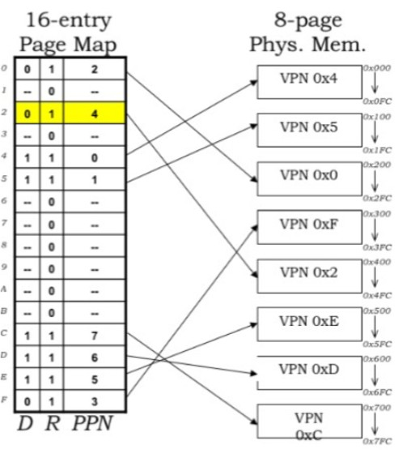
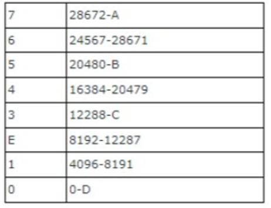
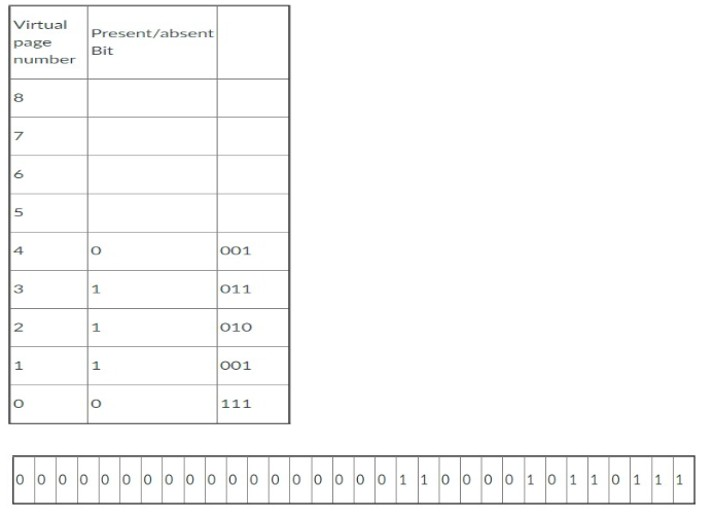
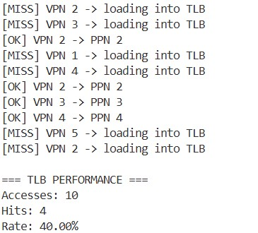
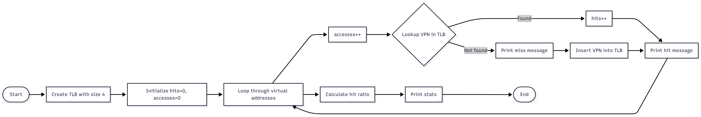

Lab Overview
In this lab, I simulated virtual memory and paging in C#, calculating VPNs, offsets, and PPNs from virtual addresses. I then implemented a 4-entry TLB simulation to track hits, misses, and hit ratios. Finally, I worked on memory interfacing tasks, including using decoders and combining control bits with memory addresses for read/write operations.
Lab Report: Memory Management and Address Translation
Task 1: Virtual Memory Fundamentals and Translation

(i) Virtual Memory Configuration
In this section, we analyzed the memory architecture to determine the system's capacity. By examining the bit distribution provided in the lab specifications, I calculated the following:
- Virtual Page Count: I found that with a 4-bit Virtual Page Number (VPN), the system supports a total of $2^4 = 16$ virtual pages.
- Page Size (Bytes per Page): Based on the 8-bit offset, I determined that the size of each page is $2^8 = 256$ bytes.
(ii) Address Translation Trace
We performed a manual step-by-step translation of a load instruction to simulate how the Memory Management Unit (MMU) maps a virtual address to physical memory. We used the virtual address 0x2C8 as our test case.
Step 1: Conversion to Binary
I began by converting the hexadecimal address into its binary representation to isolate the specific bits:
- 0x2 $\rightarrow$ 0010
- 0xC $\rightarrow$ 1100
- 0x8 $\rightarrow$ 1000
Step 2: Component Extraction (VPN and Offset)
Using the previously defined architecture (4-bit VPN and 8-bit offset), I separated the 12-bit binary string:
- VPN Identification: I identified the top 4 bits as 0010, which equates to a VPN of 0x2.
- Offset Identification: I identified the bottom 8 bits as 11001000, which equates to an Offset of 0xC8.
Step 3: Physical Mapping (PPN)
Finally, we consulted the page map to find the physical destination. By looking up VPN 0x2 in the provided table, I confirmed that it maps directly to PPN 0x4.
Task 2: Page Frame Boundary Calculations
We analyzed the structure of the main memory's bottom 32K, which is partitioned into eight equal page frames of 4KB (4096 bytes) each. I calculated the specific ending addresses for the frames requested by identifying their starting offsets and adding the frame size (minus one byte) to determine the boundary.
Physical Address Range Results:
- D (Frame 0): This frame starts at address 0.
- Calculation: $0 + 4095$
- End Address: 4095
- C (Frame 3): This frame starts at address 12288.
- Calculation: $12288 + 4095$
- End Address: 16383
- B (Frame 5): This frame starts at address 20480.
- Calculation: $20480 + 4095$
- End Address: 24575
- A (Frame 7): This frame starts at address 28672.
- Calculation: $28672 + 4095$
- End Address: 32767

Task 3: Multi-Bit Address Translation
In this section, we analyzed a more complex 32-bit virtual address to determine how the Memory Management Unit (MMU) handles larger address spaces. We broke the address down into its constituent parts—the Virtual Page Number (VPN) and the offset—to map it to physical hardware.
a) Identifying the Referenced Virtual Page
By examining the provided 32-bit address, I isolated the first 20 bits, which represent the VPN.
- Binary Representation: 0000 0000 0000 0000 0001
- Decimal Conversion: 1
- Result: We are referencing Virtual Page 1.
b) Determining the Page Frame Value
Next, we consulted the page table to find the status and location of this virtual page.
- Status: The Present/Absent bit is 1, confirming the page is currently in RAM.
- Page Frame Bits: The table provides the binary value 001.
- Denary Value: 1
c) Constructing the Physical Address
To find the final location in physical memory, I combined the Page Frame Number (PFN) with the original offset from the virtual address.
- Components: I concatenated the page frame bits (001) with the remaining 12 bits of the virtual address (100001011011).
- Physical Address: 001100001011011

Task 4: Memory System Capacity Analysis
i. Physical Pages
Law: Number of physical pages = Physical Memory Size / Page Size
pages
ii. Page Table Entries
Law: Number of page table entries = Virtual Memory Size / Page Size
entries
iii. Entry Size
Law: Entry size = PPN bits + Control bits
bits = 2 bytes
iv. Table Memory Overhead
Law: Table memory overhead (in pages) = (Total entries × Entry size) / Page size
pages


corresponding code
using System;
using System.Collections.Generic;
class TlbSlot
{
public int VirtualId;
public int PhysicalId;
}
class SimpleTlb
{
private List entries = new List();
private int capacity = 4;
public int? Lookup(int vpn)
{
foreach (var entry in entries)
{
if (entry.VirtualId == vpn)
return entry.PhysicalId;
}
return null;
}
public void Insert(int vpn, int ppn)
{
if (entries.Count >= capacity)
entries.RemoveAt(0);
entries.Add(new TlbSlot { VirtualId = vpn, PhysicalId = ppn });
}
}
class Program
{
static void Main()
{
SimpleTlb tlb = new SimpleTlb();
int totalAccess = 0;
int foundCount = 0;
int[] virtualAddresses = { 2, 3, 2, 1, 4, 2, 3, 4, 5, 2 };
foreach (int vaddr in virtualAddresses)
{
totalAccess++;
int? physical = tlb.Lookup(vaddr);
if (physical.HasValue)
{
foundCount++;
Console.WriteLine($"[OK] VPN {vaddr} -> PPN {physical.Value}");
}
else
{
Console.WriteLine($"[MISS] VPN {vaddr} -> loading into TLB");
tlb.Insert(vaddr, vaddr);
}
}
double hitRate = (double)foundCount / totalAccess;
Console.WriteLine($"\n=== TLB PERFORMANCE ===");
Console.WriteLine($"Accesses: {totalAccess}");
Console.WriteLine($"Hits: {foundCount}");
Console.WriteLine($"Rate: {hitRate:P2}");
}
}
Task 5: Memory Interfacing
5.1 Address Decoding
We explored the hardware requirements for interfacing a specific memory block to a processor. The memory contains 14 unique locations, indexed from 0 to D in hexadecimal.
- Address Bit Requirement: To address all 14 locations, at least 4 address bits ($2^4 = 16$) are required since 3 bits would only provide 8 locations ($2^3 = 8$).
- Decoder Configuration: We utilized a 4-to-16 line decoder, which maps 4-bit address inputs to 16 chip select lines, though only outputs CS0 through CS13 are utilized for this specific memory.
- Data Path: Each individual memory location is configured to store 4 hexadecimal digits, representing a 16-bit word.
- Control Signals: The interface is governed by three primary signals: WR (Active-low write enable), RD (Active-low read enable), and EN (Global memory enable).
5.2 Integrated Control Addressing
We simulated a system where control bits are integrated directly into the memory address pattern. The format used is: WR RD EN A3 A2 A1 A0.
Example: Reading Content "FEAD"
- Target Identification: The content "FEAD" is located at Index A in the memory table.
- Binary Mapping: Index A (Hex) translates to binary 1010 for the address bits A3 A2 A1 A0.
- Control Bit Settings: To perform a "Read" operation on Index A, we set WR = 0, RD = 1, and EN = 1.
- Combined Pattern: Concatenating these values gives the binary string 0111010.
- Hexadecimal Result: The final combined 7-bit address value is 0x3A.